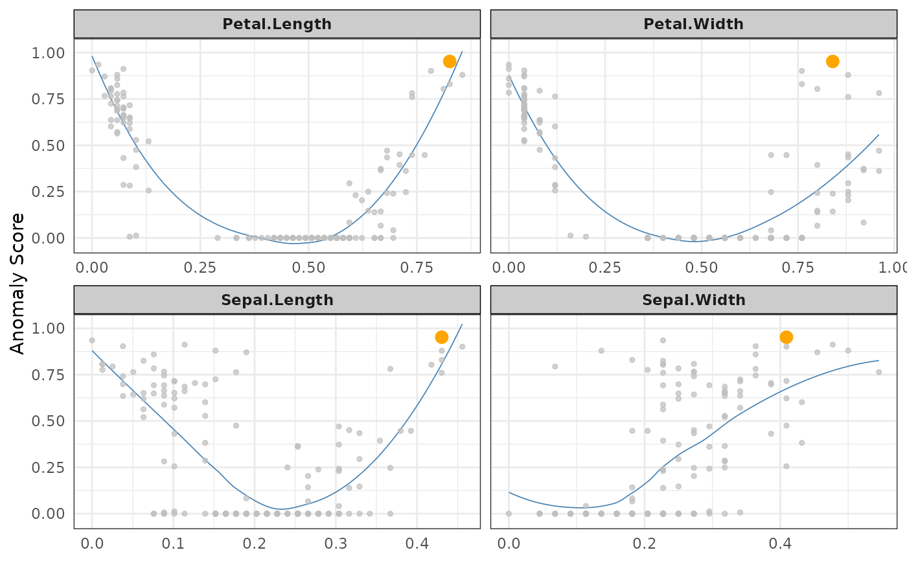

get_anomalies.RdBased on a summary normalized/stacked metric, retrieve top anomalies.
get_anomalies(
x,
rank.prop = 0.05,
nmin = 10,
nmax = 300,
stack.use = "avg",
method.use = "norm",
verbose = TRUE,
...
)stranger object (before of after singularize)
One of c("max","avg","min","damavg", "pruavg")) - must have been requestedwhen invoking `singularize` (done by default).
One of c("norm","rank") - must have been requested when invoking `singularize` (done by default).
logical: provide some information.
additional parameters to pass to singularize (if called on a non-singularized object)
Anomalies selection is performed using one summary metric. This summary metrics is assumed to stacked some base metrics - may be only one!. Stacking is performed after standardisarion, being possible with two approaches: normalisation (method.use = "norm") or ranking (method.use = "rank"). See singularize function.
Three parameters are used together to define anomalies: rank.prop is first used to filter on top x percent anomalies then one applies on top of this criteria conditions on a minimal (nmin) and maximal (nmax) number of anomalies to be provided.
proportion of records to be considered as anomalies
constraint - minimum number of anomalies
constraint - maximum number of anomalies
data <- crazyfy(iris[,1:4])
(anom <- get_anomalies(strange(data)))
#> Loading required package: FNN
#>
#> Ordering: -1xN_anom_norm_avg and -1xN_anom_norm_avg
#> 0 outliers found by default with this stacking and this method, which is not enough to satisfy nmin= 10 . Following most probable outliers are added to selection.
#> [1] 132 118 119 42 107 110 123 115 16 135
#>
#> *** Anomaly object containing 10 anomalies provided with their value for id variable '.id'.
#> Use as a vector. Available methods: fortify, plot
# \dontrun{
library(dplyr)
ss <- iris %>% select(-Species) %>%
crazyfy() %>%
strange(weird="autoencode") %>%
singularize(methods="norm",stacks="avg")
#> Loading required package: autoencoder
#> autoencoding...
#> Optimizer counts:
#> function gradient
#> 158 64
#> Optimizer: successful convergence.
#> Optimizer: convergence = 0, message =
#> J.init = 41.81937, J.final = 0.3457936, mean(rho.hat.final) = 0.001479156
anom2 <- ss %>% get_anomalies(nmin=2, nmax=4)
#>
#> Ordering: -1xN_anom_norm_avg and -1xN_anom_norm_avg
#> 0 outliers found by default with this stacking and this method, which is not enough to satisfy nmin= 2 . Following most probable outliers are added to selection.
ss %>% plot(type="n",score="N_anom_norm_avg",anomaly_id=anom2[1])
#> Your data has been converted to a dataframe to be compatible with ggplot function.
#> `geom_smooth()` using formula 'y ~ x'

# }